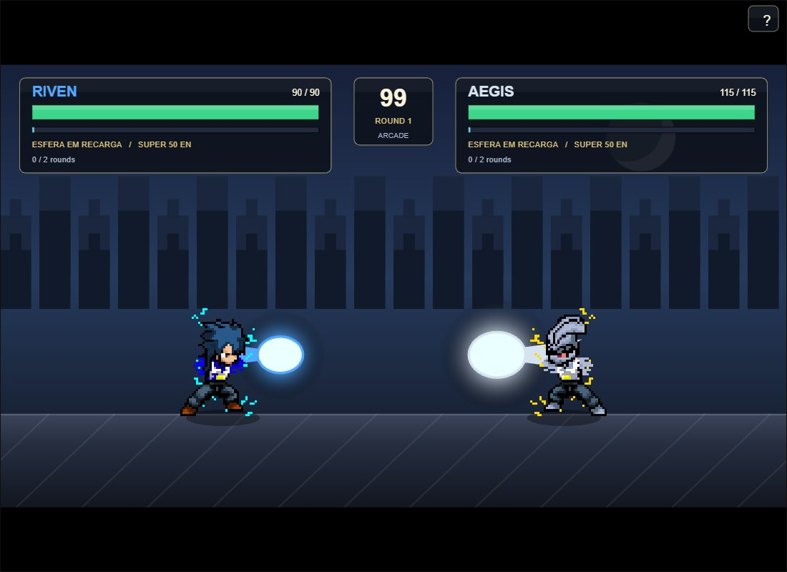
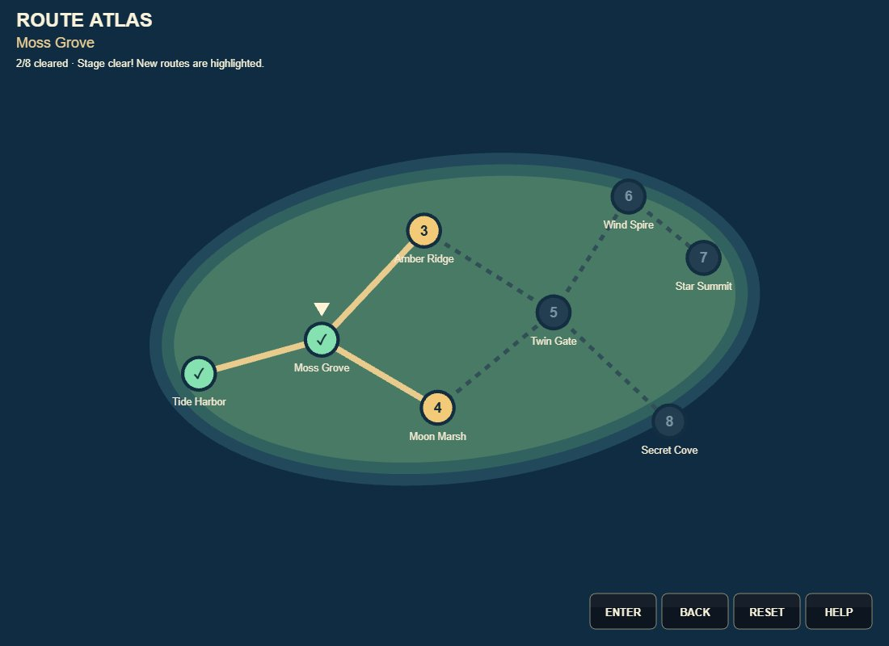
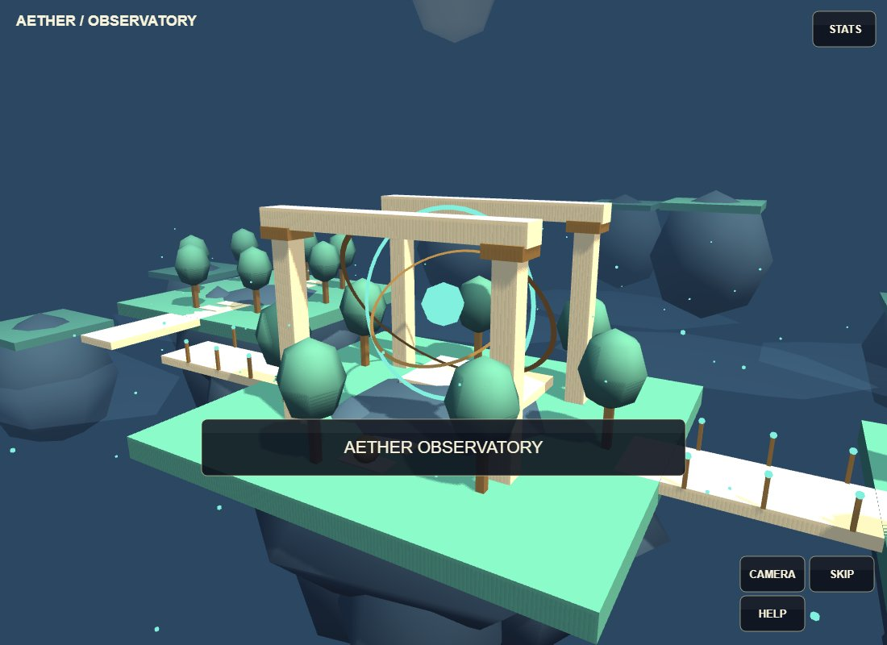
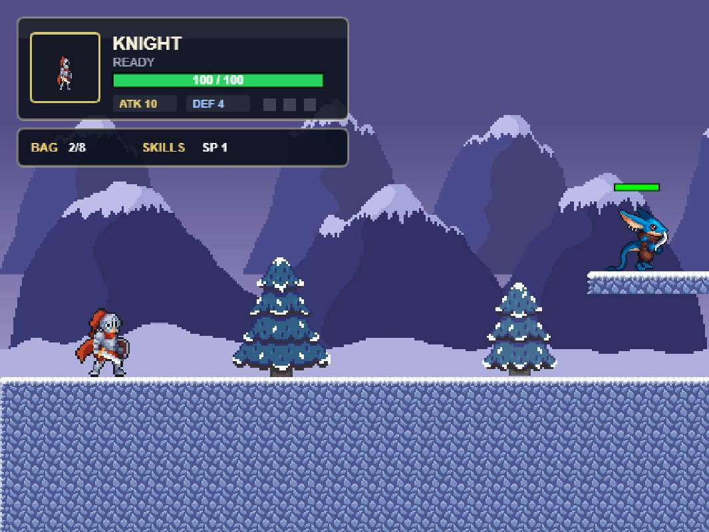

Arcade combat · 2D
Fighting Arena
Local-versus combat with a CPU opponent, buffered attacks, projectiles, and a meter-powered super.
Play Fighting ArenaGameForgeJS in practice
From tactical maps and arcade combat to 3D environments, these current examples are built with GameForgeJS. Captures are genuine browser images from the demos repository; playable builds are served locally from this site.

Route Atlas 2D · current official demo capture.
Playable examples
Open a demo page for its genuine screenshot, documented controls, and static build when available.

Arcade combat · 2D
Local-versus combat with a CPU opponent, buffered attacks, projectiles, and a meter-powered super.
Play Fighting Arena
Exploration · 3D
Floating islands, physics traversal, camera options, and a skippable cinematic.
Play Aether Observatory
Platform combat · 2D
Platform combat, enemy AI, inventory, skills, and authored stages.
Play Platform AdventureHonest availability
Most examples have portable static builds. Online Sandbox remains marked backend-required, and Highland Tactics is held out until its updated Demos PR branch is confirmed and verified.